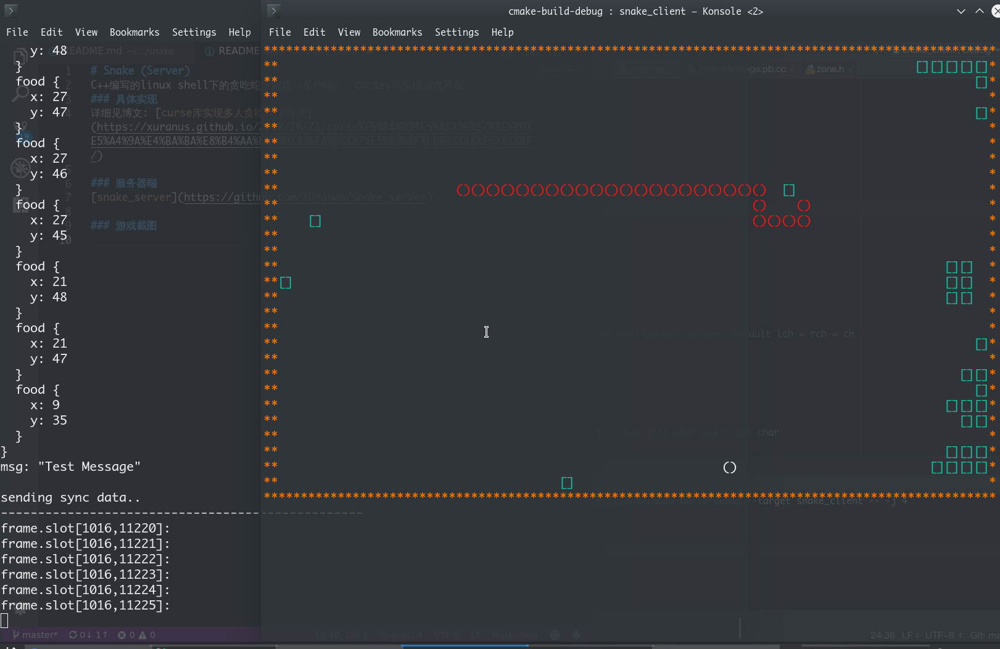

本文介绍在linux下实现一个字符小游戏贪吃蛇的过程，游戏纯C++编写，服务器使用chrono定时器做帧同步，支持所有类unix系统的select函数做非阻塞IO,采用TCP socket通信，协议部分采用protobuf二进制流;客户端使用curses字符界面库。
服务器
服务器实现所有逻辑，服务器只接受客户端的操作（包括上下左右四个方向），服务器的几个主要类为server,snake,zone,time分别用于表示一个房间，蛇，战场，计时器。每一局游戏开始，会实例化一个server，监听一个端口，创建一个游戏房间等待玩家接入，这里使用阻塞IOaccept()，需要等加入的玩家达到人数才开始游戏。
就绪后，初始化战场，一个房间对应一局比赛，一个战场。zone类给n个接入的玩家随机分配初始位置。一个战场中包含n个snake信息，snake中存了蛇的长度，以链表结构存储蛇的节点便于头尾的增删。snake中保存蛇的移动方向，当每次用户改变蛇的方向时都会改变方向变量，即使接下来不输入也会继续运动。snake中封装了各种移动方法和判定方法，实现吃事物，死亡，复活等操作。
帧同步
如果用户不输入，就会让游戏阻塞，如果有人网络延迟，则会影响到其他玩家，阅读了实时游戏延迟的解决方案发现了帧同步，即划分等长时隙（帧），在每一帧对只对有效用户输入做处理，不去理会缺失输入的用户，这样就只会卡到有网络延迟的人。
预想一个房间内玩家数不会超过10个，文件描述符较少，则采用跨平台的非阻塞IOselect()接收客户端的信息，更新对应snake的方向参数，等到帧末依据snake的方向，进行snake的下一次移动，并判定移动是否造成死亡或者增加长度，然后更新战场信息，广播：while(active) {
if(!timer.count_down()) fetch_data();//接收数据
else send_sync_data();//处理，更新战场，广播
}
原先我使用settimer()和ALARM信号机制做纳秒精度的定时器，但发现signal(ALARM,func)方法要求函数必须是静态，这带来了很多问题，于是我打自己封装一个计时器来实现时隙划分。
首先考虑到clock()函数，能精确到毫秒，但是使用后发现刷新频率和预期不符，且帧长不稳定，查阅资料发现clock()只是记录CPU的使用时间，select()中等待的时间不算做CPU时间，导致了玩家操作密集则游戏速度加快，没有输入则游戏速度缓慢的问题。之后又看到time()函数，能记录程序执行时间，但是只能精确到秒，这是远远不够的。
查阅资料后发现C++中有std::chrono库，是time()函数的高精度版本，可以精确到纳秒级记录程序执行时间，对其做简单封装，配合while就实现了计时器：
struct timer {
typedef std::chrono::high_resolution_clock clock;
typedef std::chrono::microseconds res;
int duration;
clock::time_point start,last;
timer(int);
bool count_down();
};
协议部分
逻辑部份全部放在服务器上，客户端几乎只是用curses库做渲染，所以协议中需要包含当前帧地图上所有蛇的节点信息，食物信息，等。
协议有很多种，可以是类似HTTP的字符报文，也可以是二进制流。对象的传输格式可以是json或者xml，但是为了减小带宽压力，我们信息对象封装后序列化成二进制流传输，这里用到了google的protobuf，一个对象序列化工具。
首先下载protobuf编译器和库，我的协议如下：
syntax="proto2"; |
定义了Point,Food,Snake,Battlefield,ServerMessage类型，protoc game_message.proto --cpp_out=.,生成了game_message.pb.h和game_message.pb.cc文件
服务器端生成proto对象的代码：GameProto::ServerMessage zone::server_msg_proto_data() {
GOOGLE_PROTOBUF_VERIFY_VERSION;
GameProto::ServerMessage msg;
msg.set_action(GameProto::ServerMessage_ActionType_SyncMap);
string message = "Test Message";
msg.set_msg(message);
GameProto::BattleField* battleField = msg.mutable_battle_field();
for(int i=0;i<snakes.size();i++) {
GameProto::Snake* ts = battleField->add_snake();
ts->set_color(i);
for(auto node = snakes[i]->head; node!= nullptr;node = node->next) {
GameProto::Point* p= ts->add_node();
p->set_x(node->x);
p->set_y(node->y);
}
}
for(auto food:foods) {
GameProto::Food* tf = battleField->add_food();
tf -> set_x(food.x);
tf -> set_y(food.y);
}
return msg;
}
proto对象序列化成数组，发送:const GameProto::ServerMessage &msg = battle_zone->server_msg_proto_data();
void* buf = malloc((size_t)msg.ByteSize());
msg.SerializeToArray(buf,msg.ByteSize());
for(int i=0;i<client_num;i++) {
send(client_socket[i], buf, msg.ByteSize(),0);
}
客户端
linux的shell下英文等款字体宽高比是1：2，导致每个节点上下和横向移动会缩放，为了解决这个突兀的问题，对client上的zone做了一点优化，重新封装了mvaddchar()方法，用左右两个字符，一对()来表示一个节点。
客户端给网络通信单独开辟一个线程，一旦接受到服务器的数据就更新图像。指令则用while配合getch()读取键盘。
运行截图：
